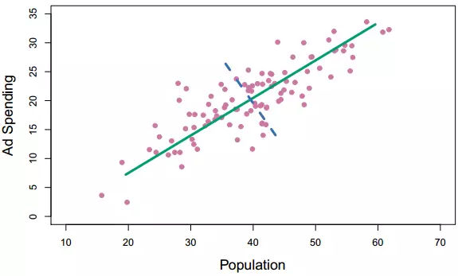
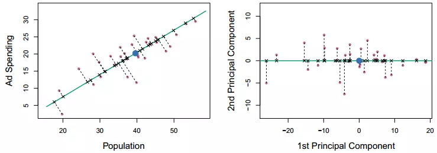
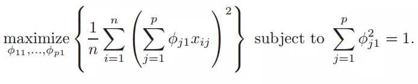

【统计学习】Principle Component Regression(主成分回归)&Partial Least Squares Regression(偏最小二乘回归)
1.简介&PCA
除了对全部特征进行筛选和压缩——这些都是针对原特征本身，那么是否可以把多个特征组合成少数的几个新特征，使模型更加简洁？特别是多个特征之间往往还存在多重共线性关系。两种方法都将新的预测变量（称为组件(Components)）构建为原始预测变量的线性组合，但它们以不同的方式构造这些组件。
PCA(主成分分析)的核心是降维,把高维空间上的多个特征组合成少数几个无关的主成分.
举个例子，在二维平面中，如果大部分的点都在一条直线附近，那么可以直接用这条直线当作一维坐标轴来反映原始数据？
在三维空间中，如果大部分的点都在一个平面附近，就可以直接用这个平面当作二维平面来反映原始数据
第一主成分是高维空间上的一个向量，所有的点沿着这条线波动最大，或者说所有的点到直线的距离的平方和最小。如下图所示，所有的点沿着绿色直线的波动最大，它就代表着第一主成分向量。
有了第一主成分，还可以依次往后选择主成分，各主成分之间是相互正交的向量。如下左图所示，右图是左图的旋转，以第一主成分作为x轴，第二主成分作为y轴与之垂直。

我们定义主成分是原特征的线性组合，即：
找到一组Φ（其平方和为1），使Z1的方差最大，它的优化问题变成：

第一主成分确定之后，如果是二维空间那么第二主成分就可以通过正交关系直接确定；对于高维空间，一个向量的正交向量可以有无数个，则在其正交向量中继续优化上式至最大值；之后的主成分依次类推。
Principle Components Analysis(PCA)
PCA具体算法步骤:
设有M个N维数据:
将原始数据按列组成N行M列矩阵X
将X的每一行进行零均值化，即减去每一行的均值
求出X的协方差矩阵C
求出协方差矩阵C的特征值及对应的特征向量，C的特征值就是Y的每维元素的方差，也是D的对角线元素，从大到小沿对角线排列构成D。
将特征向量按对应特征值大小从上到下按行排列成矩阵，根据实际业务场景，取前R行组成矩阵P Y=PX即为降到R维**后的目标矩阵
//2
对数据进行归一化处理（代码中并不是这么做的，而是直接减去均值）
计算归一化后的数据集的协方差矩阵
计算协方差矩阵的特征值和特征向量 保留最重要的k个特征（通常k要小于n）。也能够自己制定。也能够选择一个阈值，然后通过前k个特征值之和减去后面n-k个特征值之和大于这个阈值，则选择这个k 找出k个特征值相应的特征向量 将m n的数据集乘以k个n维的特征向量的特征向量（n k）,得到最后降维的数据。**
事实上PCA的本质就是对角化协方差矩阵。有必要解释下为什么将特征值按从大到小排序后再选。
首先，要明确特征值表示的是什么？在线性代数里面我们求过无数次了。那么它详细有什么意义呢？对一个n*n的对称矩阵进行分解。我们能够求出它的特征值和特征向量，就会产生n个n维的正交基，每一个正交基会相应一个特征值。
然后把矩阵投影到这N个基上，此时特征值的模就表示矩阵在该基的投影长度。
特征值越大。说明矩阵在相应的特征向量上的方差越大。样本点越离散。越easy区分，信息量也就越多。因此。特征值最大的相应的特征向量方向上所包括的信息量就越多，假设某几个特征值非常小。那么就说明在该方向的信息量非常少，我们就能够删除小特征值相应方向的数据，仅仅保留大特征值方向相应的数据，这样做以后数据量减小。但实用的信息量都保留下来了。PCA就是这个原理。
def PCA(Xmat,k):
#求平均值
average=np.mean(Xmat,axis=0)
m,n=np.shape(Xmat) #获取输入矩阵形状
data_adjust = []
avgs = np.tile(average, (m, 1)) #复制均值成矩阵，后面相减
#中心化
data_adjust=Xmat-avgs
#协方差矩阵
covX = np.cov(data_adjust.T) # 计算协方差矩阵
print(covX)
#进行奇异值分解（直接分解协方差矩阵）
featValue, featVec = np.linalg.eig(covX) # 求解协方差矩阵的特征值和特征向量
index = np.argsort(-featValue) # 依照featValue进行从大到小排序
finalData = []
if k > n:
print
"k must lower than feature number"
return
else:
# 注意特征向量时列向量。而numpy的二维矩阵(数组)a[m][n]中，a[1]表示第1行值
selectVec = np.matrix(featVec.T[index[:k]]) # 所以这里须要进行转置 ,选择前K行
print(selectVec)
finalData = data_adjust * selectVec.T
reconData = (finalData * selectVec) + average
print(finalData)
print(data_adjust)
return finalData, reconData
PCR(Principle Component Regression)
Partial Least Square Regression(偏最小二乘)
偏最小二乘，是基于因变量为多个，自变量为多个。先同时求二者的主成分，使两个主成分的相关性达到最大，然后求各个因变量与自变量的主成分之间的回归方程。
Reference
[1]https://blog.csdn.net/qq_19600291/article/details/83823994
[2]https://www.jianshu.com/p/d090721cf501?from=timeline